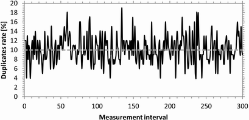
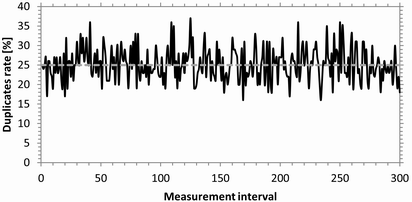
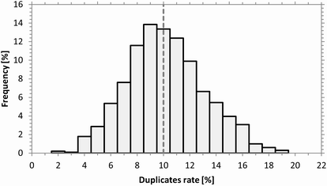
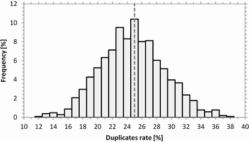

Duplicates Rate
The effect of configured packet duplication rates is tested without configured delay, with UDP and with an average packet rate of one packet per ms.
Each duplicates rate result value is derived from a measurement interval of 100 packets. The following figures show the measured duplicates rates for the first 300 measurement intervals (30000 packets). The configured duplicates rates are 10 % and 25 %, as indicated by the gray dashed lines.

Duplicates rate vs. measurement interval (10 % duplicates configured)

Duplicates rate vs. measurement interval (25 % duplicates configured)
The following figures show the distribution of the duplicates rates over all measured intervals.

Duplicates rate distribution (10 % duplicates configured)

Duplicates rate distribution (25 % duplicates configured)